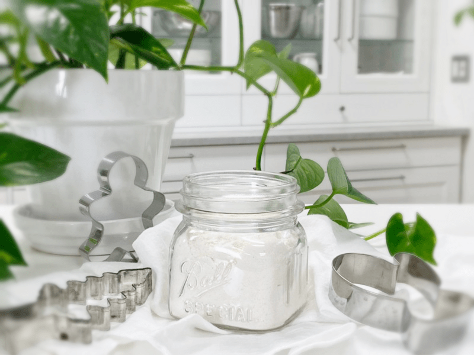

Coconut Flour – made from coconut milk pulp
In several of my raw recipes, you will see coconut flour being used. Even as you travel the web of raw recipes, you will see other chefs using it as well. But before you run to the cabinet and measure out the flour, stop and make sure that you know exactly what they are referring to.

Coconut flour comes in many forms, which will significantly affect the outcome of a recipe. They are either using raw coconut flour that you can purchase at the grocery store, a commercially heated coconut flour, or they are making their own.
Ways to make coconut flour:
- Homemade coconut flour using dried coconut flakes and blitzing them to a powder in a blender. This flour has a higher fat content and won’t be as drying to a recipe. Click (here) to learn this process.
- There is a highly processed, ultra-white coconut flour, which isn’t raw, and I don’t recommend it.
- Store-bought raw coconut flour. I recommend the Coconut Secret brand.
- Raw coconut flour made from coconut milk pulp, which is caused by placing dried coconut and water in a blender. After blending, strain the milk through a nut bag. The stuff that is left in the bag is called pulp. Spread this on a dehydrator sheet, dry it, then process it into fine coconut flour. This type of flour has less fat.
I will always be using one of two types of coconut flour; store-bought raw coconut flour or the type of flour that is made from dried shredded coconut or flour that is made from coconut pulp. Keep in mind that they can’t be substituted for one another. The reason for this is that the store-bought coconut flours absorb a lot of moisture from the recipe, which can make the outcome dry and crumbly. Coconut flour created from dried shredded coconut has a higher fat content and won’t suck a recipe dry of moisture.
Facts about Raw Coconut Flour:
- It is 100 percent gluten-free: Since there is no gluten in coconut flour, this ideal for anyone with gluten intolerance.
- Coconut flour is a high fiber food: Contains more fiber than any other flour — almost 58 percent more, which makes reaching your daily fiber intake possible!
- Can help assist in weight loss: Since dietary fiber assists in controlling glucose levels, it may help control blood sugars.
- Very low in carbs.
- It has a mildly sweet coconut taste.
- Sometimes it will be necessary to increase the liquid content in coconut flour recipes. Coconut flour loves moisture and will absorb a lot of the liquids in recipes.
- Dried coconut is an excellent source of copper, which helps to maintain the health of your brain. It activates enzymes responsible for the production of neurotransmitters.
- Always use unsweetened dried coconut, sweetened dried coconut has two teaspoons of added sugar per ounce!
- Dried coconut is cholesterol-free, very low in sodium, and high in manganese.
Ingredients:
Preparation:
- Start by making coconut milk. Click (here) to learn how.
- Spread the pulp on a non-stick dehydrator sheet and dry at 145 degrees (F) for 1 hour, then reduce to 115 degrees (F) for 4-8 hours or until it is completely dry.
- The dry time will vary depending on the climate, the machine you use, how thick or thin you spread the pulp, and how full the machine is, so use these times as a guide.
- Once dried and cooled, grind it down to a nice fine flour in a food processor, blender, or other electric grinding devices that you may have. To get it really fine, push it through a fine-mesh strainer.
- Store the flour in a glass jar and place it in the fridge or freezer to protect it from going rancid.
- It is always best to make it as you need it to preserve the nutrients, but that’s not always feasible.
- Coconuts, in general, are high in fat and can go rancid. That is why I keep all my nut products in either the fridge or freezer.
Culinary Explanations:
- Why do I start the dehydrator at 145 degrees (F)? Click (here) to learn the reason behind this.
- When working with fresh ingredients, it is essential to taste test as you build a recipe. Learn why (here).
- Don’t own a dehydrator? Learn how to use your oven (here). I do, however, honestly believe that it is a worthwhile investment. Click (here) to learn what I use.
© AmieSue.com